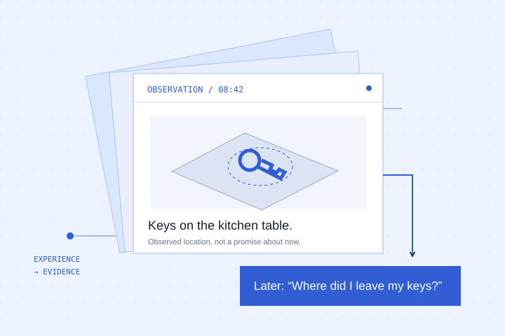
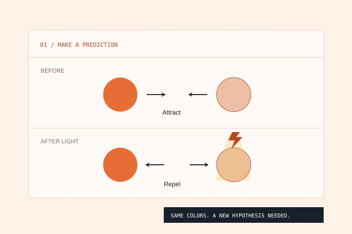
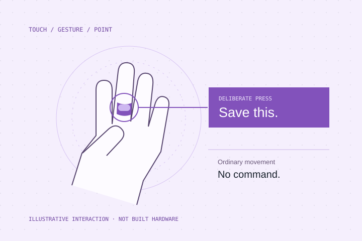

Collect experience.
Connect human observations and decisions to outcomes we can check.
Independent AI research / Mote Lab
We explore how AI can remember, learn, and interact with us. Starting with human experience and questions worth testing.
Explore the research
Everyday experience, useful recall, and evidence for what actually happened.

Small worlds for studying experiments, changing beliefs, and learning strategies that transfer.

Subtle gestures, touch, and pointing as ways to express a clear intention.
Our approach
Connect human observations and decisions to outcomes we can check.
Explore whether new data helps a model learn a specific, useful ability.
Develop datasets, evaluations, and visual explanations. License data where its value is demonstrated.
An early sketch / Memory